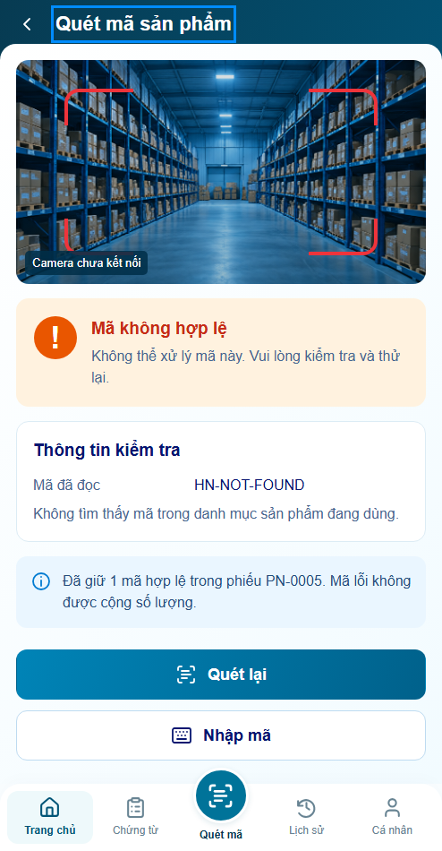
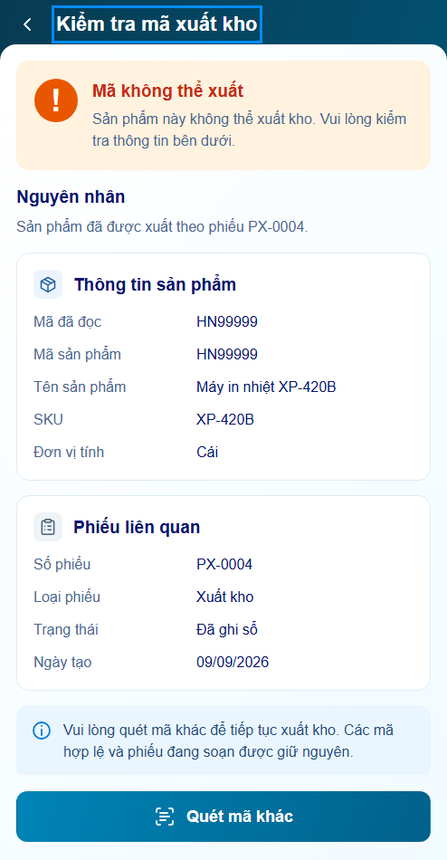
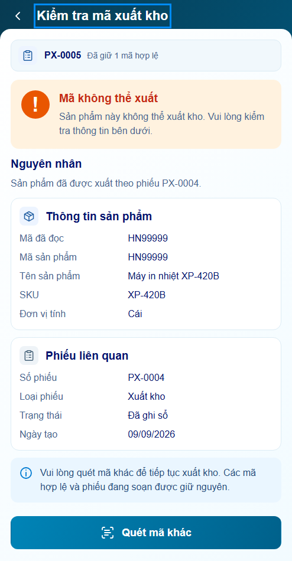
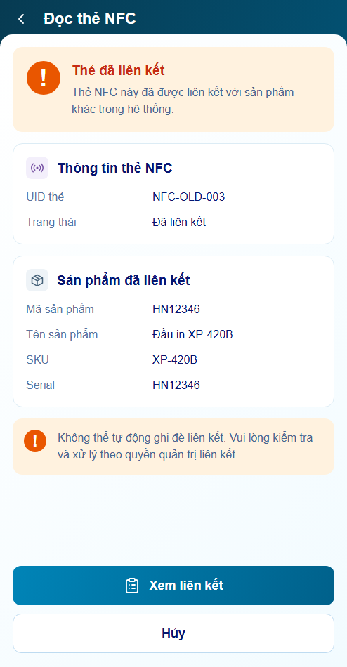
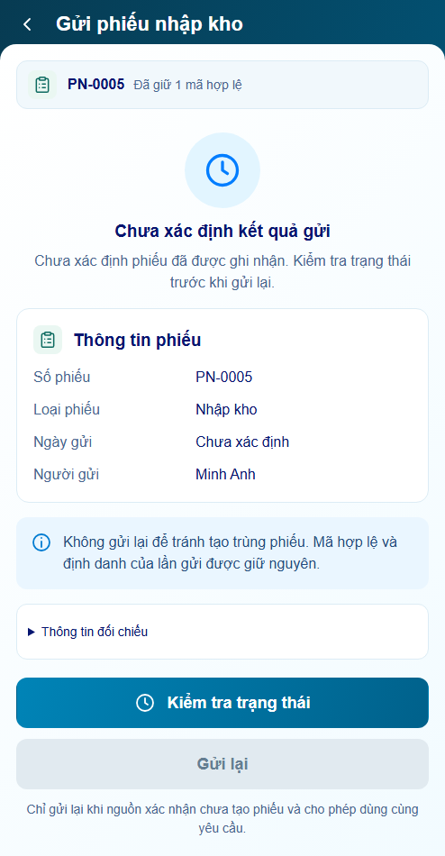
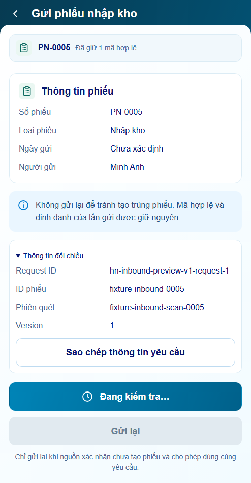
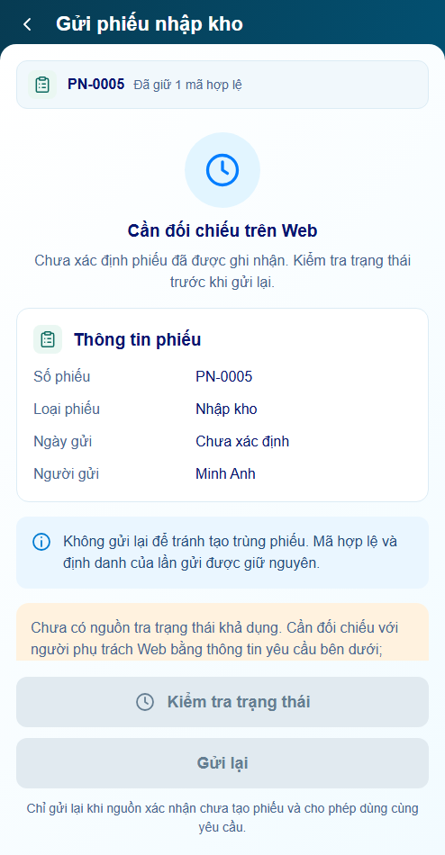
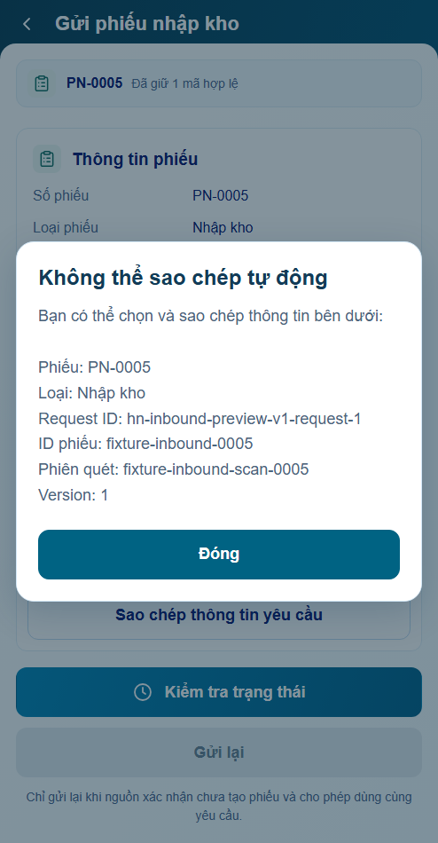

Mở audit r03 mới nhất — 7 lỗi đã sửa
P17 r02 · Sáu nâng cấp UI/UX
Ngữ cảnh phiếu · CTA khả dụng · phục hồi thao tác · đối chiếu rõ trạng thái · sao chép định danh · thông báo tiếp cận P16/P17.
Behavior PASS prototype · Visual chờ bạn review · Backend, camera/NFC, clipboard thiết bị và screen reader thật chưa xác minh.
122 test logic,20 nhóm browser P16/P17 và4viewport footer đạt. Giữ24prompt/91panel, footer khóa và cơ chế bảo toàn request.
Mở ứng dụng · Báo cáo r02 · Nguồn thiết kế · Lịch sử r01
minhanh / preview → Nhập kho → Nhập mã lỗi để thử. Khi gửi chọn Timeout ở bộ P04 ngoài app → Thông tin đối chiếu → Sao chép thông tin yêu cầu.
P17.S01 · Mã không hợp lệ
Trước · r01
Sau · r02
P17.S02 · Mã không thể xuất
Trước · r01
Sau · r02
P17.S03 · Thẻ đã liên kết
Trước · r01 Sau · r02
Sau · r02
P17.S04 · Chưa xác định kết quả gửi
Trước · r01 Sau · r02
Sau · r02
Đối chiếu và sao chép
Đang kiểm tra
Cần đối chiếu Web
Sao chép thủ công khi bị từ chối
Không tự gửi thông tin. Không mở khóa Gửi lại khi UNKNOWN. Nội dung đối chiếu được phép xem mới được sao chép.
P16 · Vị trí bàn phím khi thử lại
Focus giữ ở vùng danh sách trong lúc nút retry được thay bởi trạng thái tải; kết quả được thông báo bằng live region ngắn. Không đọc lại toàn bộ danh sách.
Actual P16 · 7 ca UX · Manifest kiểm chứng